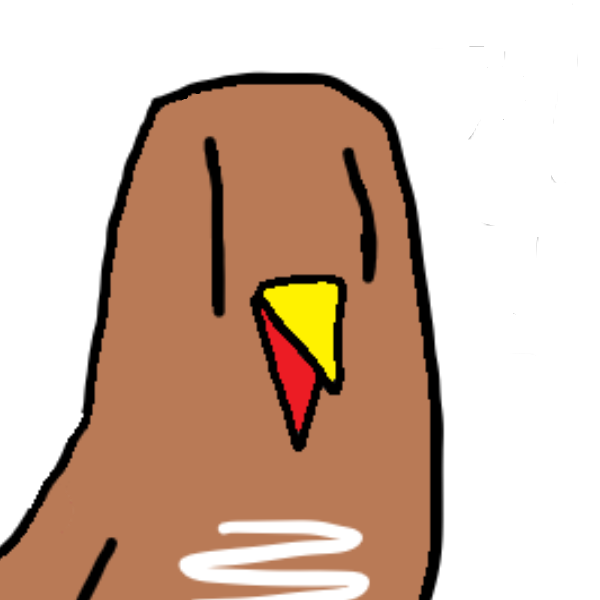

가?장 평범한 웹사이트
뭘 원하든 여기에 있을 확률 0%!
그래서 이것들은 과연 뭘까요
(위 왼쪽이 가장 오래된 것, 아래 오른쪽이 가장 최신 것)
-
'FNF Psych Engine'으로 돌아가는 여러 모드를 만듦FNF에 관심 있으면 추천
FNF Psych Engine Logo
Copyright is by Psych Engine Team - 이 사이트를 만들었음깔끔하진 않지만 그래도 만족스러움 
뭐 아닐 수도 있고